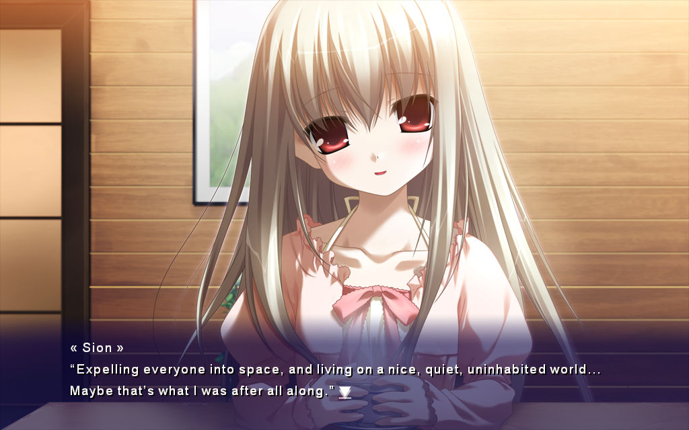
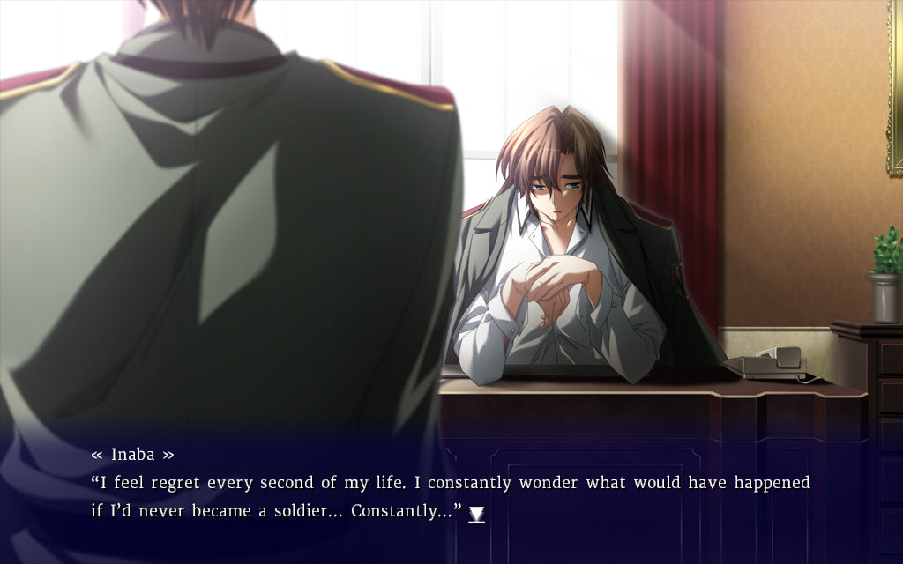
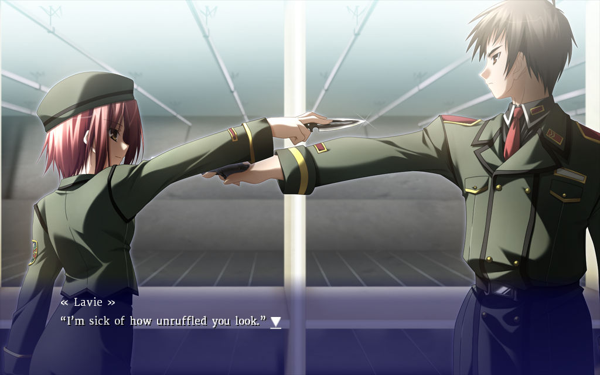
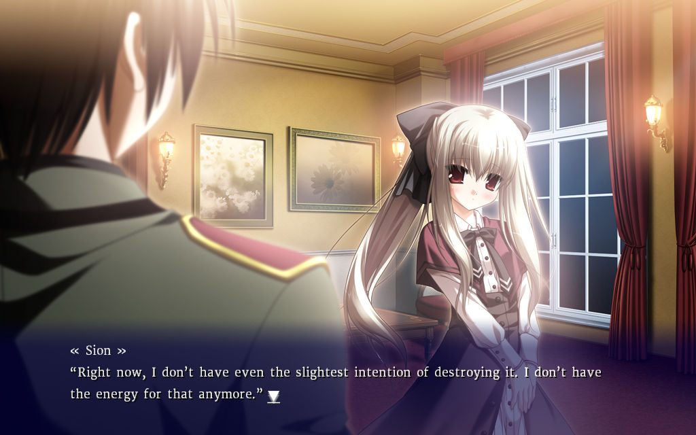
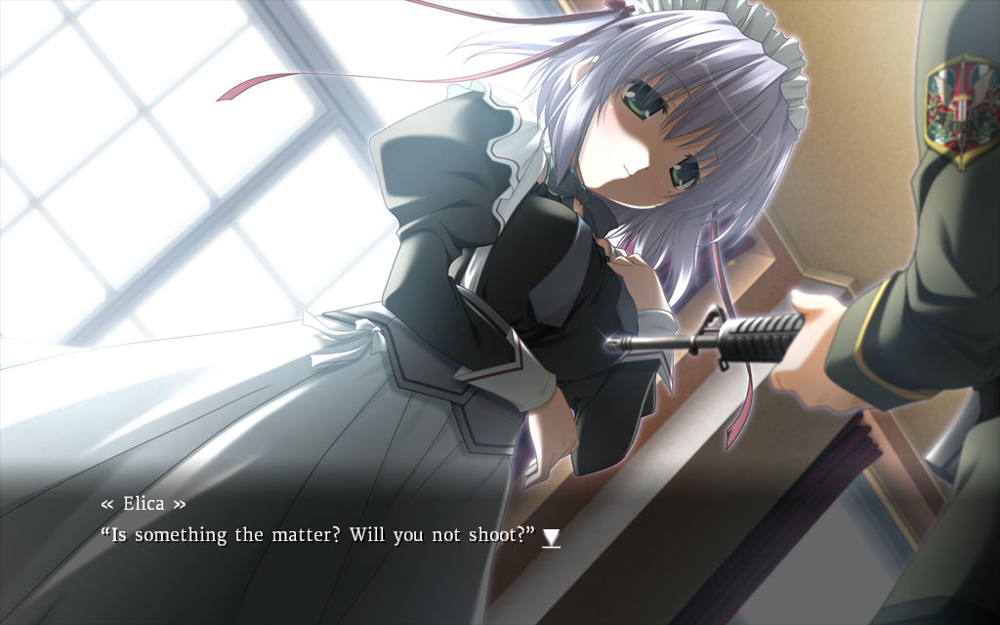
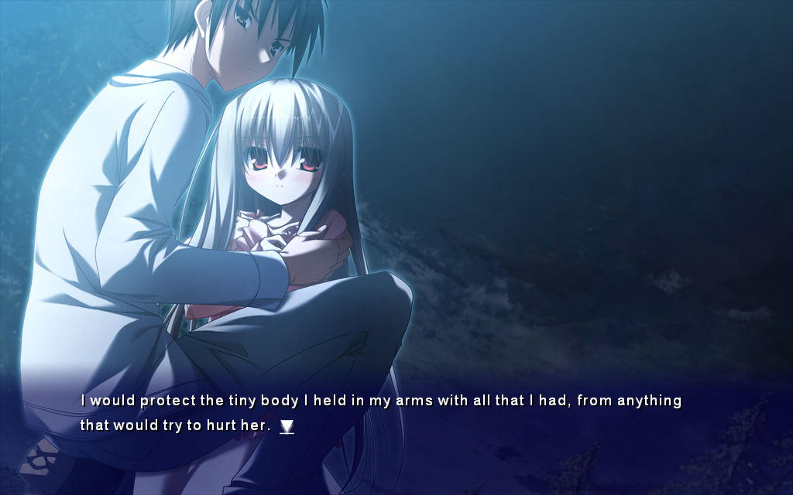
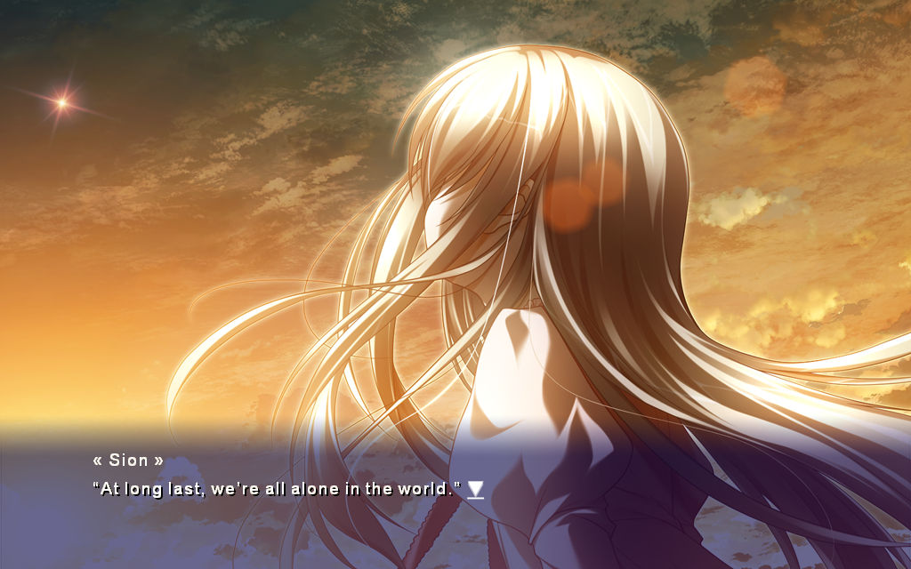
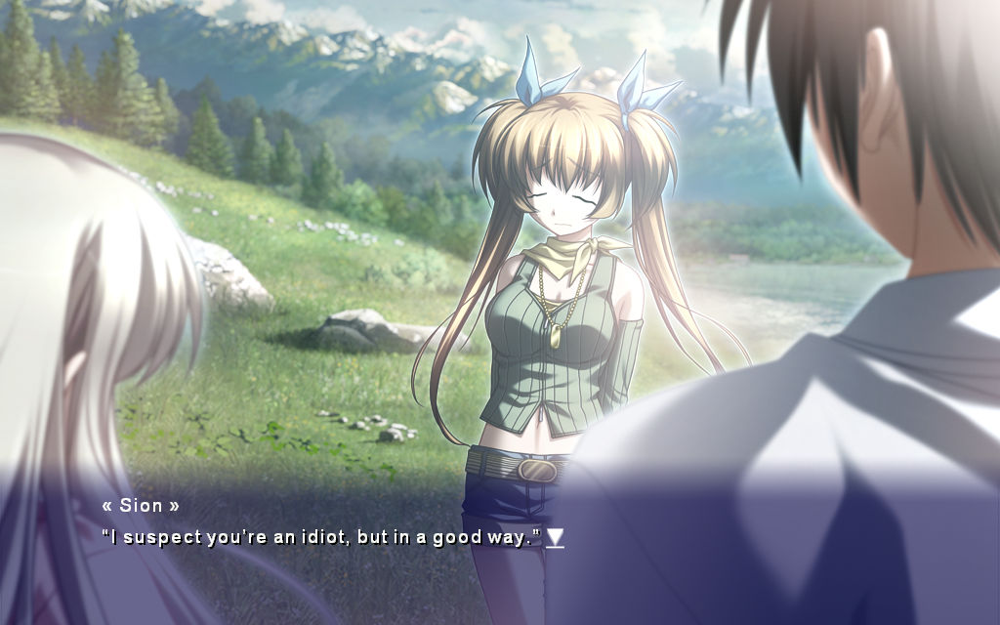

I never know what to do after finishing a game, but this time I'll talk about it while my thoughts are still fresh. This is eden*, a kinetic novel developed by minori in 2009. A sci-fi drama in the first half and a romantic drama in the second, but neither theme is strong enough for the shift to detract from the story. In fact, the story is very plain, but its visuals and sound work do leagues for it, and its generally mature characters are refreshing.
Spoilers below. And thank you to my friend June for gifting this game to me. She caught wind of my praises for the trial version.
Protagonist Ryou Haruna is a cold high-ranking soldier assigned to a secret facility to guard Sion, the superhuman leader of a planet-wide evacuation project. A group of superhumans are engineered specifically to support the project, but they're generally frustrated with their lack of agency. Ryou gets tangled up in an escape plan set up by the owner of the facility, his own sister's connections to that plan, and the rocky relationships with his companion Lavie and superior Inaba. This first act is excellent at balancing its tense and dull moments, and a deal of information is relayed in small doses. Nothing comes on too fast. Lavie and Inaba are really cool independently and in relation to Ryou, and Elica, while a bit kooky, is a baddie.




Due to Ryou's POV and obsession with his sister clouding his thoughts, we're shielded from the extreme dystopia Earth has become. Anyone in opposition of being shuttled to the endless void of space is arrested, imprisoned, murdered... like, I didn't think that was such an extreme opinion to have! The spaceships don't have an itinerary either! They sound so unappealing that I can't imagine Ryou and Sion are really the only people that evaded capture. And considering Ryou's parents are implied to be the off-grid 'extremists' he often targeted, his apathy towards the conflict is concerning.
The second act, after Ryou and Sion flee to his childhood home, is much slower. It's all about Sion coming into her own, reflecting on what in her long life what actually holds meaning to her. It drags and repeats the same drivel throughout, but two stoics building a relationship is acceptably cute. I appreciate the two's observations of Earth in decline: animals and birds dwindling and migrating, irregular weather, GMO crops struggling to adjust to these changes... these details bring minor but necessary tensions to the table.


Maya, a prominent character in this act... her design and character are woefully out of place, yet the world insists she be there. And when it's obvious the scenario is bending over backwards to justify her presence, I wonder, why in the first place... the only important thing she does is confirm the statuses of the absent characters.

Gripes aside, eden* is one of the best looking VNs I've read. Backgrounds are treated as proper three-dimensional spaces with sprites layered and scaled to support that illusion, and to great effect. Reused sprites, such as Ryou's pointed gun or the characters' backsides, never distract much. But the girls' bug eyes are an acquired taste.
Back...